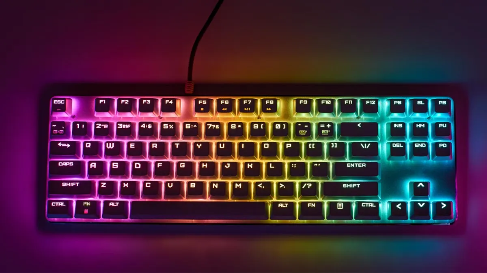

A medida que la tecnología avanza, también lo hace el comportamiento de los usuarios. La forma en que
interactuamos con la tecnología y entre nosotros ha cambiado drásticamente. Algunos de estos cambios
incluyen:
Mayor dependencia de dispositivos móviles para la comunicación y el acceso a la información.
Preferencia por la comunicación visual (imágenes, videos) sobre el texto.
Aumento de la colaboración en línea y el trabajo remoto.

Factores Humanos y Errores Comunes
1. Errores comunes observados
Entrada de datos: Teclas equivocadas, mala ergonomía, desalineación en pantallas
táctiles.
Percepción visual: Fatiga ocular, iconos poco legibles, mala elección de colores.
Ejemplos: Pulsar el botón equivocado en un cajero; confundir botones en una app móvil.
2. Factores humanos que influyen
Atención: Distracciones o cansancio provocan omisiones.
Memoria: Sobrecarga de memoria a corto plazo lleva a olvidar pasos.
Percepción visual: Limitaciones en tamaño, color y brillo.
Audición: Alarmas muy similares generan confusión.
Tacto: Falta de retroalimentación en pantallas táctiles.
3. Aprendizajes obtenidos
Preferencia por interfaces consistentes y predecibles.
Uso de ayudas multimodales (visuales y sonoras).
Adaptación ergonómica: brillo, contraste, posición de dispositivos.